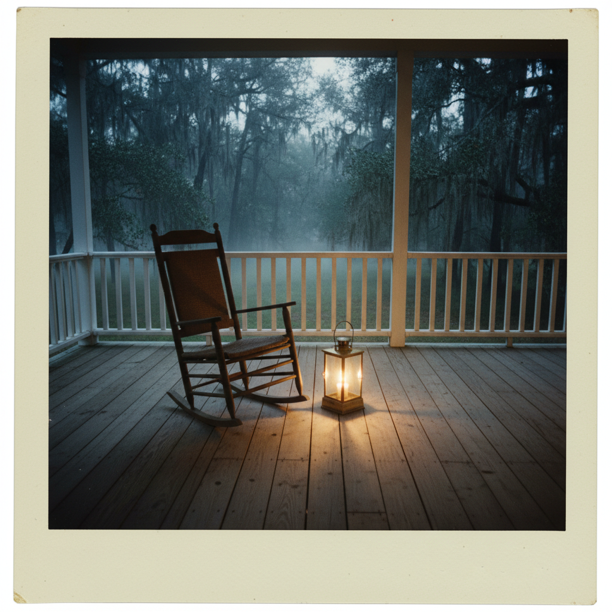
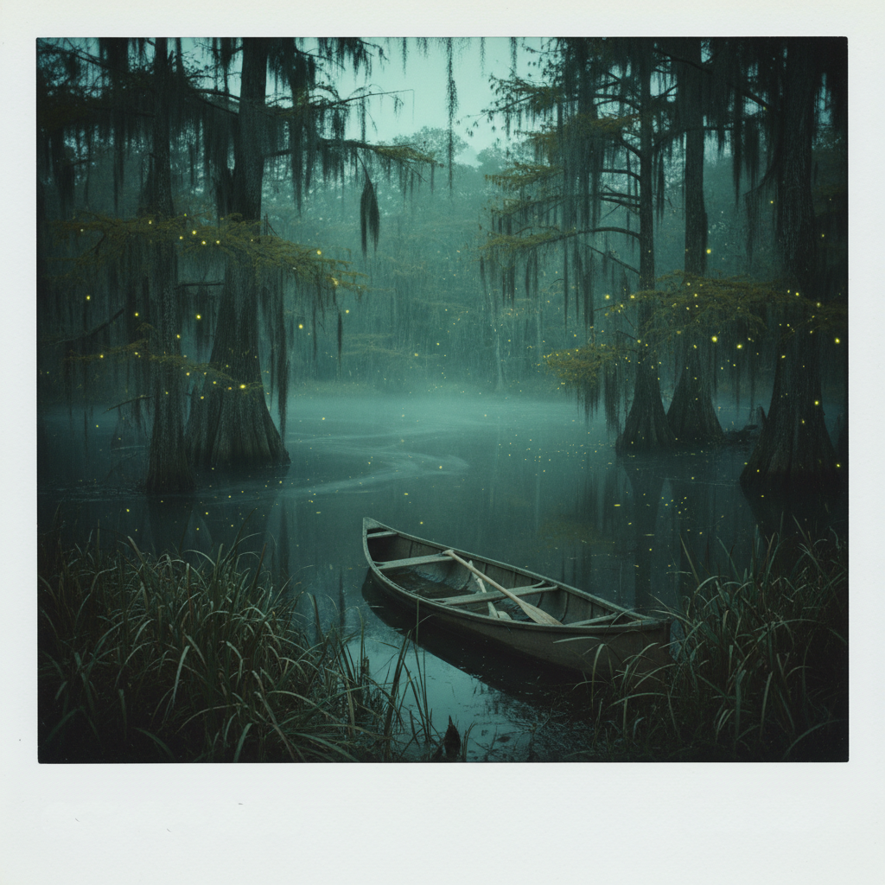
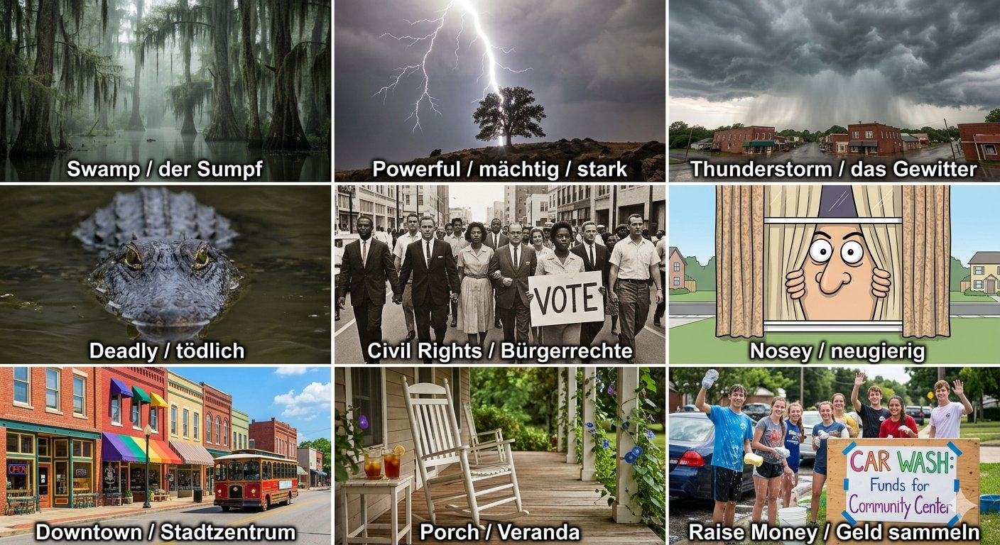

Read the text and get to know the Deep South:
🔊 Listen to the text
Use these vocabulary words in the exercises below

🔊 Listen to the vocabulary words
Find the right words for the descriptions:
Read about a hot afternoon in the Deep South:
Imagine you're sitting on the porch like Maya:
The Deep South is a region where nature and history are deeply connected. The land is covered with dark swamps, slow rivers, and thick forests. These swamps can be deadly. Alligators, snakes, and other dangerous animals live there. For centuries, people have had to be careful when they walk near the water. But the swamps are also beautiful and full of life. They tell stories of the past.
In the 1950s and 1960s, the Deep South was the center of the Civil Rights Movement. African Americans fought for their rights and for equality. They organized marches, sit-ins, and protests downtown in cities like Birmingham, Montgomery, and Selma. Many brave people, including Dr. Martin Luther King Jr., worked to change unfair laws. It was a long and difficult struggle. Communities had to raise money to support the movement. They needed money for transportation, food, and legal help. People gave what they could, even when they didn't have much.
The fight for civil rights was powerful, just like the thunderstorms that roll across the South. Both changed the landscape. Today, when you sit on a porch in a small Southern town, you can feel the weight of this history. You might see a nosey neighbor walking by, curious about what's happening on your street. You might hear the rumble of a storm coming. And you might think about the people who came before you — people who were brave enough to fight for a better future. The Deep South is a place where the past is never truly gone. It lives on in the land, the weather, and the stories people tell.
Now it's your turn to tell a Southern story!
Imagine you are a nosey neighbor in a small Southern town. Last night, there was a powerful thunderstorm, and strange things happened near the swamp. Write a 5-sentence story about what you think happened.
"Last night, during the storm, I saw…"
"Everyone in downtown is talking about…"
"I don't think it was just the wind…"